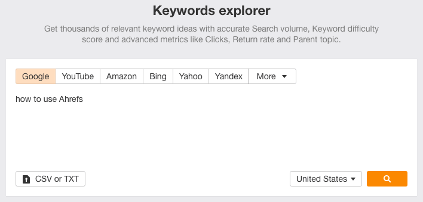
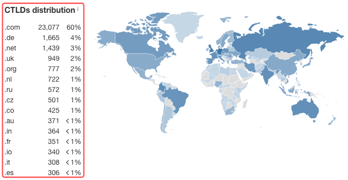

Ahrefs is a tool mainly for SEO and content professionals. It can also be used by PPC teams and has great features for competitive analysis. It’s used by companies from all over the world and is considered to be one of the most reliable sources when it comes to backlink data.
This is what Ahrefs looked like back in 2012, almost one year after the company was founded.

Image Source: Archive.org
We can see that since the very beginning, Ahrefs focused heavily on backlinks, with features like new backlinks and lost backlinks being among the first that users could use.
What separated Ahrefs from other, similar products at the time was its focus on the quality of data. Users could use the tool for its high-quality backlink data and to conduct in-depth backlinks analysis with data that they couldn’t get elsewhere.
Today, we can see that Ahrefs offers “tools to grow your search traffic, research your competitors and monitor your niche.”
Image Source: Ahrefs
Aside from the quality of data, one of the current main differentiating factors between Ahrefs and competing products is how easy users are able to use the product. In other words, Ahrefs managed to create a product that’s based on high-quality data and a user-friendly interface.
From competitor research to finding opportunities for new content and link building, Ahrefs is a powerful tool with a set of features that are being constantly improved upon.
This is why you’ll see screenshots of Ahrefs’ user interface (e.g. number of keywords) being shared more than any other tool on social media or in blog posts about content marketing and SEO.
Now that you know what Ahrefs is all about, let’s move on to exploring Ahrefs’ metrics. This will allow you to understand its features and use cases we’ll be presenting later on in this guide even better.
Like most prominent SEO software tools, Ahrefs has its own metrics. These metrics, such as its keyword research tool (Keywords Explorer), are tied to several Ahrefs tools. It is essential that we explain what all of these metrics mean so that we’re able to understand how they’re connected to our performance.
Choose a Metric
URL Rating (UR)Domain Rating (DR)Organic KeywordsKeyword Search VolumeKeyword Difficulty (KD)Number of ClicksCost Per Click (CPC)Organic TrafficTraffic ValueAhrefs Rank (AR)Pages Over Time
URL Rating (UR)
The first metric we have is URL Rating, or simply UR. You can see this metric for any of the web pages that live on a website. To see it, you just need to insert a website into the Site Explorer tool and click enter. For example, let’s check the UR for one of the guest posts we did a while back on CoSchedule’s blog.
Here’s what Ahrefs returns when you click enter:

As you can see, the URL Rating for this page is 18. This is different from the Domain Rating, which we’ll look at next. The question is, what is this metric and why does it matter? According to Ahrefs, “URL Rating (UR) shows the strength of a target page’s link profile on a 100-point scale.”
In other words, the UR counts the strength of the link profile for a given page—in our case, a post on CoSchedule’s blog—based on the total number of links (both internal and external) that this page has.
As Ahrefs states, the scale is logarithmic, meaning that it’s generally easier to jump from 10 to 20 or 30 than it is to grow from 70 to 80 and even 90
Image Source: Ahrefs
Something very important to keep in mind here is that the UR is a page-level metric, while the DR—as we’ll see next—is a site-wide metric. It’s only natural that you’d like to increase the UR for your top pages by adding more internal and external links to them.
It’s also good to keep in mind that in order to “judge” and qualify link opportunities, it’s recommended that you take a look at the UR of the page you’re going to request a link from rather than just the DR of the website.
Let’s move on to the next metric.
Domain Rating (DR)
The Domain Rating, or DR, is one of the most popular metrics not just for Ahrefs, but for the SEO industry as a whole. The reason is simple: this metric is used to determine the “quality” of a website, and in many cases to qualify link opportunities as good or not that good.
Of course, even though DR is a good metric overall, this oversimplification of things—using one metric to judge a whole website—can easily be misleading.
The DR is placed right next to the UR in the overview report in Site Explorer:

You can also find it when you’re trying to generate content ideas using Content Explorer:

It can also be found within the Keyword Explorer while in the SERP overview report:

According to Ahrefs, the “Domain Rating (DR) shows the strength of a website’s backlink profile compared to the others in our database on a 100-point scale.” This is different from the Ahrefs Rank (AR), since as Ahrefs puts it, the DR is “a less granular version of the AR.”
The DR takes into account the number of links that link back to a website. A nice distinction though is that to calculate the DR, Ahrefs takes into account not only how many incoming links a website has but also how many outgoing links it has.
In other words, it seems that Ahrefs takes both PageRank and Cheirank (reverse PageRank) into account when calculating the DR. To put that into perspective, let’s use a simple example.
Let’s assume that a domain with a DR of 50 links back to 10 domains. This means that this website’s link equity will be split among those 10 websites. Now, if a domain has a DR of 80 and links back to 100 domains, the link equity from this website will be split among those 100 websites.
Thus, it’s only natural that the 10 websites that get a link from the DR 50 website get more link equity in general than the 100 websites that get a link from the DR 80 website. Put simply, a link from the DR 50 website may have a bigger impact on your DR than a link from DR 80 website.

This is why you should always consider the number of outgoing links as well when qualifying link opportunities or conducting a backlink analysis on your website. Now, let’s move on to the next metric.
Organic Keywords
The next metric on our list is Organic Keywords. This is one of Ahrefs’ most prominent metrics and—as with DR—one of the top-mentioned ones among SEO professionals and content creators. You can view this metric in the overview report within Site Explorer for any given website by inserting the website’s homepage URL.

For example, we can see that the website in the screenshot above has over 7.4K organic keywords as well as 52 keywords identified on search ads. Besides getting the number of organic keywords on a website level, you can also get them on a page level. For example, we can see that the following piece of content ranks for over 1.2K keywords.

The question, of course, is what organic keywords are and how they’re calculated. According to Ahrefs, organic keywords describe “the total number of keywords that your target ranks for in the top 100 organic search results across all countries in our database. When your target ranks for a keyword more than once, it’s counted multiple times.”
Keep in mind that this number may—and most likely will—be different than the actual number of keywords you’re ranking for in search engines like Google. The key phrase in Ahrefs’ definition is “in our database.” Even though Ahrefs has a keyword database that’s constantly improving—and has the second most active crawler on the web after Google—there will still be some keywords missing from that database.
Something interesting to note here is Ahrefs’ capability of reporting the number of keywords a website or web page is ranking for historically in the form of a chart. You can find this by clicking on “Organic search” within Site Explorer’s overview report.

Here’s what this chart looks like:
This chart can be used as a reference for the organic footprint that a particular website or page has over time. Something really interesting here is that there are three individual lines with different shades of orange to describe keywords in positions 1-3, 4-10 and 11-100 for your ranking pages.
In many cases, we’ve noticed a high correlation between the organic footprint of a website and the organic traffic of that website. Practically, this means that the more keywords a website ranks for, the more organic search traffic it gets. That’s not definitive, but rather an observation we made in the case of many of our clients.
The last point we need to make here is that organic keywords in Ahrefs are usually country-specific. This means that you can get a list of keywords that your website or page is ranking for through the Organic keywords report within the Site Explorer.

This is particularly important if you’re targeting different countries. Note that the top keyword for each page or website you’re reviewing is usually placed on top of the list with the organic keywords. For example, you can see that the top keyword for our Clearscope guide is “clearscope.”

Note: The piece was published on May 1st and the screenshot was taken on May 7th. This means that a) our piece was indexed and got visibility on the SERPs earlier than we expected and b) Ahrefs’ crawlers do a great job of identifying new keywords on the SERPs.
With that, we can move forward with another very important metric—keyword search volume.
Keyword Search Volume
Next up, we have keyword search volume. Once again, this is one of the most important of Ahrefs’ metrics. Many SEO professionals use search volume to define the traffic potential for a particular keyword. However, we find this way of doing things a bit oversimplified.
Even though search volume is a great metric, it’s not enough to define the traffic potential for our target keyword. For example, let’s assume that we want to create a content piece around the term “how to use Ahrefs.” What we’re going to do is insert that term into Ahrefs’ Keywords Explorer.

Here’s what you’ll get once you click enter:

As you can see, our target search term has a global search volume of 90 searches per month overall and 20 searches per month in the United States, which is our target country. This number “shows how many times per month, on average, people search for the target keyword across all countries in Ahrefs’ database.”
Other tools—like Clearscope, for example—use data directly from Google to get the average number of searches per month for a particular keyword on Google search. The fact that Ahrefs uses its own data shows a) the quality of the data they have on their database and b) that this number isn’t definitive.
You need to keep in mind that this is an estimation—a close estimate that can show you the interest around a particular term. Combining this with other metrics such as the Keyword Difficulty (KD) that we’ll be looking at next can give you a good idea of what you can expect when targeting a specific keyword.
Let’s move on to the next metric that we have—the Keyword Difficulty.
Keyword Difficulty (KD)
Similar to other metrics like the DR, the Keyword Difficulty (KD) is a metric you’ll see crop up often in conversations among SEO professionals and content creators. The KD is a metric used to describe how difficult it would be to rank for a particular keyword.
For example, we can see that the keyword “how to use ahrefs”, which we just referenced, has a Keyword Difficulty of 15.
According to Ahrefs, it’s estimated that “you’ll need backlinks from ~17 websites to rank in the top 10 for this keyword.” As you can imagine, the higher the KD, the more competitive the term. However, the interesting thing here isn’t how competitive the term is, but rather how Ahrefs calculates that metric.
Here’s what Ahrefs has to say about this:
“Keyword Difficulty estimates how hard it will be to rank in the top 10 organic search results for a given keyword in a given location. It’s calculated by taking a weighted average of the number of linking referring domains to the current top-ranking pages. The result is then plotted on a logarithmic scale from 0 to 100 (low difficulty to high).”
This means that Ahrefs defines a keyword as “difficult to rank for” based solely on the number of referring domains that link back to the top-ranking pages for that particular keyword.
Of course, a specific question arises here: do search engines like Google use the number of referring domains as the only factor for ranking content on the search results? The answer is no. So why does Ahrefs use only the number of links to determine the ranking difficulty for a particular term? Some professionals argue that this is an oversimplified way to view things.
We believe that the metric itself is good, but that as with all other metrics, it should not be taken as an absolute measurement. These metrics are great as references, and they help us communicate our work more efficiently to our clients. In that context, the KD is a useful metric.
Here’s what the top results look like for the term we’re using as an example.

As you can see, apart from one result (no. 10), all other results attract links from several referring domains. Thus, it seems that even if we create a great content piece around “how to use ahrefs,” we’ll still need to get some links pointing back to it to get it to rank at the top of the search results.
That’s not definitive, of course, but following that logic path, we can understand that Ahrefs’ estimation here makes sense. Having links from ~17 websites could potentially get us in the top 10.
Let’s move on to the next metric.
Number of Clicks
The next metric we have is the number of clicks. We can see this metric for any given keyword within Keywords Explorer. The first thing you need to do is insert a keyword into Ahrefs’ Keywords Explorer and click enter.
Here’s what you’ll get next:

As you can see, for this keyword, we have 265 clicks in our target country (the US) that are distributed as follows:
- 94% in organic results
- 6% in paid results
This gives us an idea of what we can expect if we were to rank for this keyword. Of course, we need to know how the tool comes up with this number. According to Ahrefs, “clicks refer to the average monthly number of clicks on the search results that people make while searching for the target keyword.”
Something very interesting that’s connected to this is the number of zero-click searches for each keyword, which can be seen right below the search volume.

In our example, we can see that it’s estimated that only 53% of the results get a click on the SERPs. To understand why, we need to take a look at the SERPs for that particular keyword.
As you can see, there are two SERP features on top of the results that “push” the organic search results some hundreds of pixels down. However, more importantly, the featured snippet for that term gives a very good answer to the question behind our target keyword.
This makes you wonder why someone should click on one of the organic results and explains Ahrefs’ estimation on why only 53% of all searches for that keyword result in a click.
Thus, it’s easy to understand that the number of clicks for a given keyword is highly affected by the SERPs, any SERP feature that may currently exist, and how good Google is at extracting the answer the searcher is looking for and serving it on the SERPs.
The last metric we need to take a look at here that’s connected to the number of clicks is the distribution between paid and organic clicks on the SERPs. This is an estimation of the number of clicks that paid and organic results receive on the SERPs.
Ahrefs reports that “the reported proportion is based on real people’s behaviour which we monitor via clickstream.” This tells us that the tool uses clickstream data to give us the percentage of clicks for paid and organic results respectively.
Of course, this one once again an estimate, but it helps us get closer to understanding searcher behavior for the terms we’re targeting.
One last thing to mention (even though it’s a bit obvious) is that these numbers change based on the keyword you insert into the Keywords Explorer. Not all keywords have the same distribution between paid and organic clicks or the same distribution between searches that do and don’t result in a click.
Let’s move on to the next metric.
Cost Per Click (CPC)
The next metric we’re going to look at is Cost Per Click, or CPC. This is a metric that helps us understand if a given term has any commercial value assigned to it. For example, let’s say we want to target the term “how to promote your website.” Using the Keyword Explorer, we can see that this term has a CPC of $7.

So what does this actually mean? According to Ahrefs, the CPC “shows the average price that advertisers pay for a click on their ad in paid search results for a target keyword in a given country.” So, once again, we can see that the metric is country-specific. One question here could be, where does Ahrefs retrieve these averages from?
Image Source: Ahrefs
As Ahrefs states in its metrics guide, “we always recommend that you use Google AdWords if you’re looking for the most recent and accurate CPC values for your list of target keywords.” Thus, we can see that the most accurate CPC values come from Google Ads (formerly Google AdWords). To get such values, you can use a tool like Google Keyword Planner.
For now, just keep in mind that the CPC isn’t an absolute number, and that it’s also highly dynamic as trends come and go and search advertisers change their bids accordingly. Nonetheless, the CPC is a great metric to give you an idea about the commercial value of your target term. Let’s move on to the next metric.
Organic Traffic
Organic Traffic is one of the most referenced metrics among bloggers, SEO professionals and content creators. Once again, we’re talking about estimates and not absolute numbers. You can view the Organic Traffic for any website or web page on the Site Explorer. For example, Visme’s Organic Traffic is 1.1M.

According to Ahrefs, organic traffic is “the target website, subsection, or URL’s estimated monthly organic traffic from search.” A really interesting and useful feature that’s connected to that is the historic representation of the organic traffic for a website or a particular page. For example, here’s Visme’s organic traffic growth—across all countries—historically.
This chart can be particularly useful when you want to quickly audit a website or qualify an opportunity based on its past performance. From the dropdown list on top of the Organic search report within Site Explorer, you can also see how organic traffic fluctuates over time for specific target countries.
Of course, you have the option to segment the organic traffic for only the countries in which the website or page you’re auditing already has organic visibility. Let’s move on to the next metric.
Traffic Value
The previous metric we analyzed was Organic Traffic. Here, we have a metric that’s connected to that. Traffic Value is used to help us determine the commercial value of the traffic we receive. Once again, we can choose to display the commercial value of a particular page, website or section of a website. Let me share an example with you.
Let’s assume we want to see the Traffic Value of the blog section of the website bystored.com. What we’re going to do is insert the exact path in which the blog lives on the website and choose “Prefix” as our option.

The “Prefix” option means that Site Explorer is going to function for all the following URLs:
domain.com/path/*
Thus, in this case, we’ll be able to display the Traffic Value of all the URLs that are included in the blog section of the website. Something to pay attention to here is that for some websites, even though the blog posts of the website live in the /blog/ folder, the posts themselves live close to the root domain.
This means that instead of domain.com/blog/blog-post, the blog posts live in the domain.com/blog-post URL. In fact, this is the same structure as MINUTTIA’s blog, which lives in the minuttia.com/blog folder.

Our blog posts, instead of using the structure minuttia.com/blog/blog-post, are a bit closer to the root domain, minuttia.com. Thus, our Clearscope guide, for example, lives in the URL minuttia.com/clearscope-guide instead of in the URL minuttia.com/blog/clearscope-guide.
This is something you need to pay attention to when trying to determine the Traffic Value for specific parts of a website. Now, returning to Ahrefs, we can see that Visme’s Traffic Value is $1.1M.

In plain English, that means that if Visme wants to pay to acquire 1.1M monthly visitors, it would cost approximately $1.1M.
This is a number that can easily be misunderstood, so let’s use Ahrefs’ definition here to make it clearer: “Organic traffic value is the equivalent monthly cost of traffic from all keywords that the target website/URL ranks for if paid via PPC instead of ranking organically.”
Taking this a step further, let’s see how this metric is calculated.

Image Source: Ahrefs
It’s very important to understand that this metric—like the majority of Ahrefs’ metrics—is an estimation. Under no circumstance you should treat it as an absolute number. It can give you an idea of how your traffic is translated into commercial value; nothing more, nothing less.
We’ve seen this metric create false impressions repeatedly, so make sure you’re clear about how this metric is calculated when you refer to it. Let’s move on to the next metric.
Ahrefs Rank (AR)
Next up, we have the Ahrefs Rank, or AR. This isn’t a metric that’s referenced very often. You can find it primarily within the Site Explorer, right next to the UR and DR for any given website or web page.

For example, as you can see above, the AR of Drift is 6,963 as of today, May 10. According to Ahrefs, the “Ahrefs Rank (AR) shows the strength of a target website’s backlink profile compared to the others in our database, with rank #1 being the strongest.”
This means that the tool takes into account the backlink profile of a website, similar to what it does with the DR and UR. This shows us that backlinks matter more than anything else when it comes to how Ahrefs treats things and measures a website.
That’s slightly different from how other traditional SEO tools like Moz treats things, but it seems to make sense nonetheless. According to a survey of 1,500+ SEO professionals by SparkToro in 2019, the “quality of linking sites and pages” comes second in the list of most prominent ranking factors.
Image Source: SparkToro
This means that today, most SEO professionals still believe that links matter when it comes to SEO. Thus, it makes perfect sense that an SEO tool takes links into account when forming the relative positions of the millions of websites that exist in its database.
Pages Over Time
This is the final metric on our list, and it can be found through Content Explorer. To understand how it works, let’s use the term “online learning platforms” as an example. Here’s what the Content Explorer returns for this particular term.

Pages Over Time are displayed on the chart at the bottom of the report. This metric shows you the number of pages created for that particular term since May 2016. Those are only the pages that exist in Ahrefs’ index, but they can give us an idea of the popularity around a certain term given the amount of content created around it.
To understand if that spike we can see in the number of pages created and published for our target term makes any sense, let’s insert this term into Google Trends. In doing so, we see that in the same period that there was a spike in the number of pages published, there was also a spike in searches for that particular term.

Image Source: Google Trends
Thus, it makes perfect sense that the number of published pages saw an increase in order to meet the demand for knowledge around that topic.
In general, you can use this metric as a way of referencing the popularity of a term that you’re considering targeting. Of course, an increase in popularity equals—in most cases—higher competition. However, knowing that there’s content being created and published for a given topic is an indicator of whether or not that topic can be an opportunity.
And with that, we’ve covered the most prominent metrics used by Ahrefs. In the following section, we’ll analyze the tool’s features and how they can be used for content and SEO purposes.
In this section, we’re going to present some of Ahrefs’ main features. The only feature not included here is the SEO WordPress Plugin, which we don’t use as part of our processes.
Choose a Feature
Ahrefs Site Explorer
The Site Explorer is probably the most popular and most referenced Ahrefs feature. From identifying link building opportunities to uncovering the content gap between two pages or websites, the Site Explorer is a powerful tool with endless capabilities. To use it, you need to click on “Site Explorer” on the menu located at the top of the page.

Next, you need to insert the domain or page that you want to audit and select the Mode of that search using one of the following four options:
- URL—the exact URL that you want to audit
- Prefix—the exact path that you’ve inserted
- domain/*—the domain without its subdomains
- *.domain/*-the domain with all its subdomains
As an example, we’re going to use Ahrefs.com and want to see the performance only of the domain without its subdomains. Once we finish inserting the domain and choosing domain/*, we click enter.

Author’s Note: The tool will then check both the http and https version of your website.
Here’s what you’ll see next:

Let’s analyze the main parts of this report. On the left side, we have all the Site Explorer’s Reports.

In the center of the page, we have some important metrics, all of which we’ve analyzed in the Metrics section.

Right below the metrics, we have three Overview Reports that give us a quick overview of the status of the website in terms of:
- Backlinks
- Organic search
- Paid search

From these three reports, we can get an overview of the website’s performance without having to jump into the reports located on the left side of the page. At MINUTTIA, we’re mostly interested in the “Backlink profile” and “Organic search” reports.
From the first one, we get useful information and aesthetically appealing charts that show us (for example) how the number of referring domains for a particular website changes over time.
This is something that helps us understand whether or not a website is actively acquiring links. It’s a chart we reference frequently and even include in our monthly reports.
Another important chart in this report is the one that shows the CTLD distribution for the backlinks of the website we’re auditing.

This shows us what countries are the referring domains that link back to the website (or web page) we’re auditing.
The Organic search report is also very useful, but for different purposes. It gives us a quick overview of how the website is performing in terms of organic search. What we’re mostly interested in here is the “Organic traffic” chart, which shows us how the website has been historically performing in terms of organic traffic.
Another very important chart is the Organic Keywords Chart, which shows us how the organic visibility of a website changes over time.
Most of these charts are particularly useful when it comes to reporting and getting an overview of a website’s performance.
Back to the reports that exist on the left side of the page, we’re going to provide a quick summary of what each report is all about, as well as how you can use it as part of your content and SEO strategy.
1) Backlinks
This report shows all the backlinks pointing back to your target domain, subdomain, folder or URL. It has three additional reports: a) New, b) Lost, and c) Broken—all of them important for analyzing your website’s backlink profile.

2) Referring Domains
Similar to “Backlinks”, this report shows you the domains pointing back to your target domain, subdomain, folder or URL. Keep in mind that a domain can link back to your website multiple times. We find this report to be more important than “Backlinks”, as it counts unique links from different domains.

3) Anchors
This report shows you the anchors (anchor texts) used from websites that link back to your website. This can help you identify possible spam anchor texts among the ones used to link back to your website or identify patterns based on your anchor text profile.

4) Referring IPs
According to Ahrefs, this report “groups all referring pages and domains by the IP address of each website and by the subnet that this IP belongs to.” In essence, it helps you identify patterns among the IPs of the websites linking back to your (or another) website. This could help you uncover possible black-hat tactics (PBNs) used for link building for competitor websites.

5) Internal backlinks
This is a relatively new report that shows you the internal links that pages on your website have. You can get this kind of data from other tools and crawlers, but it’s always good to have more data sources and be able to compare them.

6) Link intersect
This report can help you identify link targets by finding websites that link back to your competitors (or any other website you’re interested in), but don’t link back to your own website.
7) Organic keywords
This is a full list of organic keywords that your website is ranking for, divided by country. For more information on this report and metric, please visit the “Metrics” section of this guide.

8) Top pages
This report shows you the top pages on your website based on their monthly organic search traffic, as calculated by Ahrefs.

9) Top subfolders
This is a relatively new report that shows you the top subfolders on your website based on their monthly organic search traffic, as calculated by Ahrefs.

10) Top subdomains
In case you’ve chosen the Mode *.domain/* and your website has subdomains that get organic traffic, you’ll see them listed in descending order (in terms of organic search traffic) here.

11) Competing domains
This report shows you the domains that rank in the top 10 organic search results for the same keywords that you do. Keep in mind that your business competitors won’t always be displayed (or considered as) competing domains, as there may not be a keyword intersection between the two websites.

12) Competing pages
This report shows you the pages that rank in the top 10 results for the same keywords as your own pages. You should expect that most pages here will come from some of the competing domains shown in the previous report.

13) Content gap
This report allows you to compare your website (or certain parts or pages on your website) to other relevant websites or pages. This will generate a list of relevant keywords that the other websites or pages rank for but yours doesn’t.
14) Best by links
This report shows you the best pages on your website in terms of the number of links from internal or external sources.

15) Best by links’ growth
This report shows you the best pages on your website in terms of link growth (link velocity), or how fast they acquire links. This can help you understand what pages on a competitor’s website attract the most links passively or what pages the competitor is actively trying to build links to.

16) Top content
This report shows you the top content that exists on your website (or part of your website) in terms of social shares. This is different from the “Top pages” report, which ranks pages based on the amount of organic search traffic they get.

17) Linked domains
This report shows you all the domains that your website links back to. This could help you detect possible errors or mistakes in terms of what websites you’re choosing to link back to. Keep in mind that these websites should be as relevant as possible.

18) Anchors
This report gives you a complete overview of the anchors used from your website to outgoing links (both external and internal). This is different from the “Anchors” report that exists in the “Backlink profile” section, which shows the anchors used by other websites when linking back to your website.

19) Broken links
This report shows you the broken outgoing links that exist on your website. These are links from your own website to other websites, and are different from the “Broken Backlinks” that you can find in the “Backlink profile” section.

20) PPC keywords
This report shows you a list of keywords that your website (or part of your website) is ranking for in paid search results.

21) Ads
This report gives you a preview of your ads in terms of search results. It’s not as useful for your own website as it is when it comes to monitoring competing websites.

22) Top landing pages
Finally, this report shows you the pages on your website (in descending order) that receive the most paid search traffic. Of course, if you’re running paid search ads, this is something you can view directly in your Google Analytics account. Thus, this report makes more sense when it comes to monitoring your competitors rather than auditing or reviewing your own website.

Ahrefs Keywords Explorer
Keywords Explorer is another of Ahrefs’ most popular features. It allows you to discover new keyword opportunities and structure your new pieces of content by getting long-tail variations or questions that are relevant to your main keyword. Here’s what the main view of Keywords Explorer looks like:

Author’s Note: At MINUTTIA, we don’t use “Keywords lists”, so we’re not going to discuss that feature in this guide.
As you probably already know, keyword research is an integral part of all successful SEO strategies. Thus, tools like Keywords Explorer are particularly useful for various activities related to strategy. To start using Keywords Explorer, you need to insert a keyword.
Even though you can insert keywords manually, you can also upload a .csv or .txt file (e.g. when you already have a list of keywords you want to get data for). In our example, we’re going to discover new keyword opportunities by inserting a head term into the tool. Note that you can also add multiple keywords, separating them by comma.

Additionally, you can choose the search engine you want to use for exploring new keyword ideas and set the country you want to get data for.
In our example, we’ll set the parameters as follow:
- Keyword: online course
- Search Engine: Google
- Country: United States
Once you’ve made the adjustments, you can click enter.
Here’s what you’ll see next:

The message displayed at the top of the report informs you about the freshness of the data. You can click “Update” to get fresh data in case several days or more have passed since the data was updated.
Editor’s Note: Clicking “Update” will result in spending one SERP update credit. The number of SERP updates you have per month is determined by the plan you currently use.
We’re not going to discuss the metrics displayed in the report, as we covered these in the Metrics section of this article. Instead, we’re going to look at the individual reports that exist on the left side of the page. Here they are:
1) All keyword ideas
This is a list of all the relevant keyword ideas based on your target keyword. According to Ahrefs, “this is a combination of the keywords found in the other six reports.”

You can use the filter at the top of the report to see keywords that match certain criteria (e.g. those that have a KD between 0-20)
2) Phrase match
This is the report we use most often at MINUTTIA. This report includes keywords that contain your target keyword (in our case, “online course”). It’s particularly useful to help you find keywords that match a certain user intent. For example, at MINUTTIA, we have a list of 116 modifiers that are often found in queries with informational search intent.

We copy those modifiers and insert them into the “Include” filter, choosing the option “Any word”. This will return keywords that include a phrase match of our target term and any of the words included in our list.

Here’s what you’ll see next:

By default, keywords are sorted in descending order by Volume. For each of these keywords, you can get a list of useful metrics such as the KD or CPC. You can further filter results using some of the filters included at the top of the report.

Although additional filters may be useful, they’re not necessary in this particular case, since the results from our search intent modifiers already look very promising. Note that the √ symbol means that this keyword exists a) in one of your keyword lists (something we don’t use at MINUTTIA) or b) in one of your projects as a keyword you’re tracking through the Rank Tracker.

Something quite interesting about these reports is the SERP column.

Author’s Note: This button is visible for most keywords. If there’s not sufficient data for a particular keyword, the button won’t be visible on the report.
If you click on the SERP button, you’ll see the following window pop up:

The first view option (SERP Overview) shows you what the SERP looks like for that keyword. Note that in the “Top keyword” column, you can see the top keyword for each of the results in the top 10 organic results for the selected keyword.
The second option shows you a historic overview of the SERPs for the selected keyword. It basically tells you how competing pages perform over time.

This can give you an idea of the volatility of the search results for that term over the selected time period. SERP volatility is important and should be taken into consideration when selecting what keywords to create content around. For example, we can see that there is high SERP volatility for the following term, at least for a 2-month period.

This could indicate that we should stay away from this term and probably target one where results seem to be more steady. On the other hand, it could also indicate an opportunity we could leverage. It’s always a matter of perspective, since content and SEO are both very opinionated fields.
After choosing the keywords that seem like a good opportunity, you can choose to export the results in .csv format by clicking the “Export” button.

3) Having same terms
In this report, you’ll find keywords that include all the words in your target keyword in any order. That’s different from the phrase match, where all keywords include all the words of the target keyword in the exact same order.

4) Also rank for
According to Ahrefs, this report shows “keywords that the top-ranking pages for your target keyword also rank for in the top 100 search results”.

This report can be useful if you filter results based on certain keywords and phrases. Otherwise, having an unstructured list of keywords that competing pages are ranking for isn’t of any great use.
5) Search suggestions
This report shows auto-suggestions based on your target keyword.

Even though this report usually has far fewer keywords, the relevancy is often much higher. This is because those keywords come from relevant searches and thus are closer to the topic we’re considering covering.
6) New discovered
This report shows you exactly what the name suggests: keywords that are newly discovered.

This report can be useful when there are changes in the way people search due to events that have an impact on human conditions or behavior. An example of this is COVID-19, which changed the way people search and what they search for. This could generate new keyword opportunities for certain industries. some of which could be discovered through this report.
7) Questions
This report includes keywords that are phrased as questions. For example, since the target keyword we’re using as an example is “online course”, a question here could be “how to create an online course”, which is actually one of the keywords suggested by Ahrefs.

This report can help you uncover questions people might have around your target keyword, include them in your piece of content, and thus cover the topic more thoroughly.
With that, we can move on to the next feature—the Site Audit.
Ahrefs Site Audit
The Site Audit is a feature that allows you to crawl a website and identify technical issues that may have an impact on your performance. The process starts with setting up a new project. Here’s what the feature’s page looks like:

All the websites you’ve conducted a crawl for will be displayed on this dashboard. As you can see, Ahrefs gives you the option to buy more crawl credits, meaning that you can crawl more and bigger websites based on your current plan.
Here at MINUTTIA, we use three different crawlers for website crawls and technical audits:
- Sitebulb
- Screaming Frog
- Site Audit by Ahrefs
Since most of our needs are covered with the first two crawlers, additional credits for this feature aren’t really necessary. However, if the Site Audit is the only crawler you use to conduct website crawls, you may well want to consider buying additional credits.
To set up a new crawl, you need to click on “New project”.

From there, you’ll be asked to follow five steps of creating a new project. For the sake of example, let’s assume we want to conduct a website crawl on conversational marketing platform Drift. Let’s begin by inserting Drift’s domain into the empty bar at the top of the page.

Ahrefs will auto-suggest a name for the project, although you can change this as you see fit. Also, as you can see in the above screenshot, the message “Your domain is accessible” will be displayed in the event that everything goes well.
If Ahrefsbot—the name of the crawler Ahrefs uses to crawl a website—can’t access your website through your Robots.txt file, you’ll get an error message saying that your website isn’t accessible.
This may occur for several reasons:
- The Robots.txt directives on your website don’t allow crawlers like Ahrefsbot to access the website.
- There is a temporary server error and the response time is too long.
- There is another issue preventing your website from being crawlable at that moment.
Assuming everything is okay, you’ll then be asked to verify ownership of the website. This optional, of course, and isn’t required to create a new project. You can verify ownership of a website through any of the following methods:
- DNS record
- HTML file
- HTML tag

Verifying the ownership of a website allows you to access advanced crawl settings such as a higher number of parallel requests when crawling a website. In plain English, this means you can crawl a website faster than if you were using a regular setting. If you can’t verify ownership of the website (as in our example), you can just click “Continue”.
Next, you can set up the crawl setting for your Site Audits.

To configure a Site Audit, you need to adjust three different sets of settings:
- Schedule
- URL sources
- Crawl settings
Schedule has to do with scheduled crawls for your website. This is particularly useful for agencies that work with different clients and websites, where many things change constantly. One way to monitor these changes is by running scheduled crawls on your clients’ websites at a time interval that makes sense.
At MINUTTIA, we run scheduled audits of our clients’ websites once a month at the beginning of each month. Here’s what the settings usually look like for our clients:

As you can see, the Frequency is set to Monthly and the day the month starts is the 1st. The time is set to 10:00 AM GMT +03:00. With our settings, the first crawl will be conducted after creating this new project.
Author’s Note: It’s recommended that you run your scheduled crawls at times when your servers aren’t as busy, meaning that your website won’t be getting too much traffic. This way, you’ll avoid “pushing” your server and putting extra weight on its shoulders.
After configuring your scheduled crawls—if that’s something you need, of course—you need to define the URL sources.

As you can see, the pre-selected options are:
- Website—the defined URL will be used as the starting point for the crawl.
- Auto-detected sitemaps—the XML sitemaps that the crawler finds will be used as a source of URLs for your crawl.
There are three additional options you can select when setting up a new Site Audit:
- Specific sitemaps—when you have specific XML sitemaps (e.g. blog sitemap) you want to include in your crawl, which is useful mostly for large websites.
- Custom URL list—when you have a specific list of URLs you want to include in your crawl.
- Backlinks—when you want the crawl to start from the URLs that have external backlinks in Ahrefs’ database.
In most cases, the first two pre-selected options work fine for regular crawls. If you want to crawl and optimize certain parts of your website based on its different XML sitemaps, you can choose the “Specific sitemaps” option.
In the next step, you can adjust the Crawl Settings. These are settings that have to do with how your website will be crawled—for example, the crawl speed and excluding URLs that match a certain pattern from the crawl. Here’s what the main view of that page looks like:

Let’s take a look at the settings that exist there. First, you need to adjust the number of parallel requests—which is set to 1 for non-verified domains—and the delay between requests.
Crawling a website with 2,000 pages where we have 1 parallel request and 2 seconds delay between each request will take 4,000 seconds, or 1.1 hours. Next, we can adjust several settings such as asking the crawler to follow links with a nofollow tag or to not to execute JavaScript, which is mainly used for websites built with Angular or React.
Author’s Note: In general, we recommend that you leave those settings as they are, especially if you don’t have someone with SEO knowledge to advise you.
Next, you can set limits on things like the number of pages you’re going to crawl, the maximum duration of your crawl, or the maximum number of clicks (depth) you want the crawler to perform to discover and crawl pages.
In general, it’s always recommended to respect the directives that exist on your Robots.txt file. Although you can ask the Ahrefsbot to ignore those directives, this may result in crawling pages that shouldn’t be crawled. After all, those pages have a “Disallow” directive for a reason. Thus, it’s recommended that you don’t enable the “Ignore robots.txt” option.
Author’s Note: The User agent allows you to choose between different agents and thus crawl either the desktop or the mobile version of your website.
Next, you can choose to exclude URLs that match certain patterns. For example, for a website like Drift, this could be to exclude from the crawl all pages included in the https://www.drift.com/careers/ subfolder. In this case, we should ask the Ahrefsbot to exclude the following URLs from the crawl:
Author’s Note: In general, we recommend that you leave those settings as they are, especially if you don’t have someone with SEO knowledge to advise you.
To give directives on which URL patterns to crawl and which ones to avoid crawling, you have to use Regular Expressions (AKA Regex). If you want to know more about some common Regular Expressions, feel free to read this guide by Ahrefs.
The same thing applies for the last option when it comes to advanced settings for the Site Audit.
URL rewrite rules are a bit more advanced than the “matching the pattern” ones. However, we suggest you avoid messing around with these settings if you don’t have professional help.
After adjusting the settings for your Site Audit, you can click “Continue”.

From there, you just need to configure the Rank Tracker and Competitors for your project and you’re ready to go.
When your crawl is ready, you’ll be able to see it in the main view of the feature. From there, you can click on any of the crawls and get specific information on that particular one. Here’s what you see when choosing one of the crawls that exist on Site Audit.

If you scroll down a bit, you’ll see all the crawls—scheduled and not—that have been conducted for that particular project. If you click on any of these crawls, you’ll be able to see all the identified issues from that crawl.

You can also choose to delete any of the crawls by clicking on the button with the three dots on the right of each one.

Here’s what a crawl looks like once you select it:

Let’s take a closer look at the different parts of this report. In the top right corner, you can configure a new crawl or see the current settings for your crawl.

On the top left corner, you can see the name of the project, when the crawl was conducted, and the date of the crawl, as well as choose to display a segment.

On the left side of the page, you can see the individual reports generated by Ahrefs based on the crawl of your website.

Ahrefs categorizes issues identified by the crawler using the following categories:
- Internal pages
- Indexability
- Links
- Redirects
- On page
- Duplicate content
- Localization
- Performance
- Images
- JavaScript
- CSS
- External pages
Clicking on any of these reports will open the issues that belong to that specific category. For example, here’s an overview of the Links Report:

You can click on “Issues” to see all the individual issues identified by the crawler during that crawl.

Clicking on any of these issues will open a new window that shows you what the issue is all about, how to fix it, and what affected URLs you need to take care of.

Back to the crawl anatomy (main view), we have some main charts for the whole crawl on the center of the page, along with the option to print those charts and insert them into a custom report.

Next, we have some top issues identified during the crawl. These are all issues sorted by importance (e.g. Warnings first), and are not broken into the individual reports that we just saw.

At the bottom of the crawl anatomy page, we have “Bulk Export”, which basically allows you to export data in bulk—for example, for the anchor text of all the hyperlinks found during the crawl.

Editor’s Notice: We haven’t talked about the “Tools” that you can find in the main view for a website crawl (crawl anatomy). We’ll cover this section when we update this guide.
With that, we can move on to the next feature—the Rank Tracker.
Ahrefs Rank Tracker
The Rank Tracker is a popular feature that allows you to do exactly what the title suggests: monitor your rankings. By default, you can add a keyword to Rank Tracker when adding a new Project. This means that the keywords you rank for have to be tied to one of your Projects. Here’s what the overview in Rank Tracker looks like:

This gives you a general idea of how you’ve been performing for the last 30 days—the timeframe set by default. Let’s take a look at the filtering options that exist in the Overview report. First, you can choose between desktop and mobile results.

Then, you can choose one of Ahrefs’ pre-defined timeframes such as 7 days or 90 days, or even set your own custom range.

Next, you can choose the Location you want to monitor your performance for. As you can see, in our example, the location is set to be the United States.

Editor’s Notice: The option “Tag” is skipped because we don’t use tags at MINUTTIA.
Another filter is “Positions”, which basically allows you to see changes in keyword rankings only for certain positions (e.g. positions 1-3). This isn’t something we use very often, as we want to have the full scope of information available for keywords in all positions on the SERPs.

Next, we have “Volume”, which allows us to see only keywords that fall under a specific range (e.g. >500) when it comes to their search volume.

Similar to “Volume”, we can choose to see only keywords for which we get a certain amount of traffic based on our website’s relative position on the SERPs.

Then we have “KD”, which allows us to see keyword movements only for keywords with a certain Keyword Difficulty (e.g. >50).

The last filtering option we have is SERP features, which allows us to filter results based on certain features our target keywords may have gained visibility for. For example, we may choose to see only keywords (and pages for those keywords) that are visible as sitelinks on the SERPs.

The next report that we have is “Pages”. This is a table showing the pages a website ranks for, along with that page’s top keyword. At MINUTTIA, we don’t use this report very often.

Then we have “Grossing”, which is a table with all the keywords that had movement—both positive and negative.

The next report is “Keyword metrics”, which shows us more keyword-specific metrics for the keywords for which there was some kind of movement on the SERPs.

The report “Competitors” allows us to see how our website performs for our target keywords related to our competitors’. Of course, in order for this report to work, we have to set competitors in the first place.
You can do that when first setting up a new Project, but you can always go back and change your list of competitors by adding/removing competitors you want to judge your performance against. As you can see below, the first thing you see in this report is how you perform against your competitors in terms of:
- Visibility
- Average position
- Traffic
- SERP features
- Positions

At the same time, you can see how your visibility changes over time against your competitors, and even add annotations as you’d do in Google Analytics based on changes that have occurred on your website (e.g. blog redesign).
Below this chart, you can see a table that shows how you compare to your main competitors in terms of your target keywords. The table reports both positive and negative changes for the positions you have for those keywords.

The report “Traffic Share” shows the traffic share among other competing pages on the SERPs for your target keywords. This report makes more sense when you enable the “Only me and tracked competitors” in order to see the traffic share distribution among competing pages for your target keywords.

Keep in mind that a content competitor isn’t always a business competitor. In fact, in most cases, the fact that you’re competing with a content piece on the SERPs doesn’t mean that this website is a competing business.
To add new keywords to your list of tracked keywords, you just need to go to the Overview page of the Rank Tracker and click “Add keywords”.

There, you’ll be able to add more keywords to your list of tracked keywords. You can choose among keywords you already have visibility for. Here’s what that option looks like for one of our clients, LearnWorlds.
Pressing the “+” will add keywords to your list of tracked keywords. You can also add keywords manually (to the box on the center of the page), one next to another and separated by commas.

Author’s Note: As we mentioned earlier, you can also add tags to your keywords so that you can categorize them. However, this isn’t a function that we use at MINUTTIA.
When you finalize the list of keywords you want to track, all you have to do is click “Add keywords”. This will add the new keywords to the existing list of tracked keywords, and Ahrefs will start reporting on movements for those keywords as well.

With that, we can move on to the next feature—the Content Explorer.
Ahrefs Content Explorer
The Content Explorer is one of Ahrefs’ most important features. It allows you to search for content online, do link prospecting, validate keyword ideas, and discover keyword opportunities for future content pieces. Here’s what the Content Explorer looks like:

The two buttons at the bottom of the page show you a) the history of your searches on Content Explorer and b) advanced search operators you can use in Content Explorer.
Using this feature starts by inserting a term into the search bar and clicking enter.
The options you have when it comes to how you want the tool to search for your term are:
- Everywhere—if you’re looking for the target term everywhere in a search result.
- In title—if you’re looking for the target term in the title of a search result.
- In content—if you’re looking for the target term in the content of a search result.
- In URL—if you’re looking for the target term in the URL of a search result.
In our example, we want to see results that have an exact match with our target term, which could be anywhere in a result (e.g. URL, content, title). Here’s what we see next:

At the top of the page, you’ll see some filtering options such as the following. First, you can choose what pages you want Content Explorer to show you—you can choose between pages that were published just once and pages that were republished.

Then, you can be a bit more specific with the timeframe you want to see results for. For example, you can choose to see only pages that were published within the last 90 days.

Then, you can filter results based on the first published date. This will return only new pages published on the web that exist in Ahrefs’ index.

Next, you can choose the language you want the result to be in. In most cases, if you’re searching for English terms, you’ll be mostly getting results that are in English.

Last but not least, you can choose to see pages that are either live (and properly displayed on the SERPs) or pages that return a 404/410 response. That can be particularly useful if you’re using Content Explorer for broken link building.

Besides the filtering options we just saw, you also have additional filtering options in the “Add filter” dropdown menu. For example, an interesting option is to filter results by word count or by number of social shares.

An interesting addition in Ahrefs Content Explorer is the “Pages over time” graph. As we explained earlier, this shows you how “cluttered” and competitive the SERPs can be for a particular term. It doesn’t work as a standalone metric to identify competitiveness on the SERPs, since there are other metrics and factors we should consider, but it can be a useful metric overall.

Something that was added quite recently by Ahrefs is the “Top authors” table at the right of the page. This shows you the top-ranked authors of the pieces for your target term, based on the number of pages they’ve published and the traffic those pages get.

Scrolling down the page a bit, we can see the actual results divided into four categories:
- Pages
- Authors
- Websites
- Languages

The default option here is “Pages”, for which you have some additional filtering options as well as the option to export the results.

Clicking on any of these results will open a new window with charts and useful performance metrics for that particular page.

The “Authors” table view shows us an extended view of the small table that exists on the top right corner of the page. This can be useful if you’re doing link building or trying to identify influencers and thought leaders in your industry for a given topic.

Next, we have “Websites”, which helps you see the top websites for the term you’re interested in. This is a view that shows results on a domain level, not on a page level as with the “Pages” view. It can also be useful when trying to find what websites dominate the SERPs for topics you’re interested in.

The last table view that we have is “Languages”, which sorts results only by the language they’re in. This isn’t a view we use often at MINUTTIA, as we find more practical value using the “Pages” and “Websites” views.

With that, we can move on to another very important feature—Ahrefs Alerts.
Ahrefs Alerts
Similar to other SEO software tools, Ahrefs has its own alert feature. Ahrefs Alerts allows you to set up three different types of alerts:
- Backlinks—To monitor new backlinks to your or to competing pages
- New keywords—To monitor new keywords for your or your competitors’ websites
- Mentions—To monitor the web for mentions of your or your competitors’ brand
To create a new Alert for any of these three types, simply click on “New Alert.”

Let’s see how Alerts for each of those types are created. To begin with, let’s assume we want to monitor all new backlinks to our Google Search Console guide. Here’s what the configuration window looks like:
Let’s see each of the options included in this configuration window:
- Domain or URL—The domain or page URL we want to set up the Alert for
- Mode—The Mode can be URL, Prefix, domain/* or *.domain/*
- Scope—The Scope can be All backlinks, New Backlinks or Lost Backlinks
- Interval—Weekly or monthly based on how often we want to receive notifications
- Send email—Whether we want to receive an email for the Alert we’ve set up
For example, if we want to get a monthly report of the lost backlinks for that content page on MINUTTIA’s blog, we’ll adjust the settings as follows:
The next type of Ahrefs Alerts is New keywords. This Alert monitors new keywords for a particular domain or page URL. Assuming we want to set up an Alert for the same content piece we used as an example for backlinks, we need to insert the page URL and adjust the settings as we see fit.
Let’s see each of the options included in this configuration window:
- Domain or URL—The domain or page URL we want to set up the Alert for
- Mode—The Mode can be URL, Prefix, domain/* or *.domain/*
- Country—The country we’re interested in monitoring through our Alert
- Volume—The search volume for the keywords to be included in the Alert
- Interval—Weekly or monthly based on how often we want to receive notifications
- Send email—Whether we want to receive an email for the Alert we’ve set up
For example, if we want to receive a monthly report on the new keywords that have a search volume between 0 and 500 for that content page on MINUTTIA’s blog, we’ll adjust the settings as follows:
The last type of Ahrefs Alerts is Mentions. This is a very interesting type of Alert because it allows you to use both simple queries and more complex ones. For example, let’s assume we want to create an alert for online brand mentions for MINUTTIA. Our Alert will look like this:
Let’s see each of the options included in this configuration window:
- Search Query—The query (simple or not) that triggers the Alert
- Mode—The Mode can be Everywhere, In title, In URL or In content
- Languages—The language we’re interested in monitoring through our Alert
- Blocked domains—The domain we want to exclude from the Alert
- Interval—Weekly or monthly based on how often we want to receive notifications
- Send email—Whether we want to receive an email for the Alert we’ve set up
For example, if we want to get a monthly report with all new mentions for MINUTTIA in English, we’ll adjust the settings as follows:
Editor’s Note: In this example, the “” are used to trigger only mentions that match the search query exactly.
With that, we can move on to the next feature—the Ahrefs Rank.
Ahrefs Rank
Similar to search engines like Google, Ahrefs has an index—a list of websites on the web—that ranks the crawled websites based on their popularity in terms of links. Here’s what the index looks like:

You can search the index in two main ways:
- Filter by locale (e.g., *.gr)
- Filter (or search) by domain
Let’s take a look at the first way, filtering our results by locale and trying to find the best Greek websites on Ahrefs’ index. Here’s what the filter looks like:

And here’s what the results based on our filter look like:

Although we might not see any practical value of this feature, we believe that searching by domain can be more useful for general market research purposes. All you need to do to find the position of a particular domain in Ahrefs’ index is insert the domain and click enter.
For example, let’s say we want to find Backlinko’s position in the index. We’re going to insert “backlinko.com” into the search bar and click enter.

We can see that Backlinko is #2,437 in Ahrefs’ index the moment we did the search. Of course, that number can change, as the index is fully dynamic and not static. As websites acquire more links, their position in terms of the Ahrefs Rank changes as well.
Ahrefs Domain Comparison
Ahrefs Domain Comparison allows you to compare up to five different domains and get useful data—mainly around backlinks—for each of them. This can be useful when you have a small number of direct competitors and you know exactly who these competitors are. Here’s what the feature page looks like:

To understand how this feature works, we’re going to insert Drift and Intercom as an example of competing websites that we want to audit. After inserting the full website URLs, you can click “Compare.”

Here’s what you’re going to see next:

This is the main table of comparison data for the two domains we’ve inserted. As mentioned before, we have mostly backlink data. Scrolling down a bit, you can see four interesting charts—two for each domain—that show a) the distribution of links between the two domains in terms of text, redirect and form links, and b) the distribution of links between the two domains in terms of nofollow and dofollow links.

Note: If you want to learn more about what each metric means, you can visit this page on Ahrefs’ website.
Moving on, we can see a graph depicting the historic growth of referring domains between the two websites that we’re using as an example.

At this point, you have three options as to what kind of data the graph will display:
- Referring Domains
- New-Lost Referring Pages
- Referring Pages
Even though all three options can be useful for different reasons, we find the first one—Referring Domains—to be the most accurate when trying to describe the backlink status and performance of a particular domain. Simply put, this means we should analyze link velocity on a domain level rather than a link level.
You may be able to acquire 10 different links per month from a certain domain. That’s not the same as acquiring 10 links from 10 different domains for the same period. Thus, the relative value—all other things being equal—is higher in the second case.
Back to the Domain Comparison report—you can choose to download this graph and integrate it into your reports and presentations by clicking on the little button with the three stripes in the right top corner.

The options you have here in terms of the type of file you’re going to download are:
- PNG
- JPEG
- SVG
One of the inefficiencies of this feature is that it doesn’t allow you to download the comparison data that you’re shown in the beginning. You can make a screenshot to integrate into your reports, but you can’t export data like you can with other features on Ahrefs. However, we believe this feature will continue to improve and that we’ll soon have the option to download the comparison data in .csv format.
Ahrefs Batch Analysis
Batch Analysis in Ahrefs helps you “generate multiple backlink reports by entering a list of domain URLs.” This is particularly useful for content audits or any other activity that requires you to generate backlink (and other) data in bulk for several URLs. The feature may not be as useful if you have to audit 10 URLs, but it can definitely come in handy if you have to audit URLs in the hundreds or thousands.
Here’s what this feature looks like:

You can analyze up to 200 URLs at a time. Assuming you’ve inserted a list of URLs—one URL per line—you can click “Analyse”.

Note: In most cases, you won’t have to make any adjustments to the three options next to the Analyse button. To conduct a regular Batch Analysis, leave those options as they are.
Here’s what you’re going to see next:

You basically get a series of useful metrics based on the URLs you inserted in the first step. At the top of the report, you can see how many URLs were included in the analysis—in our example, 10 URLs—and choose to export the results by clicking on the “Export” button like in other reports on Ahrefs.

The truth is that this report makes sense and is useful only if used together with data from other sources (e.g. Screaming Frog, Sitebulb), and for certain processes that require backlink data or just the number of keywords a page is ranking for. As I mentioned earlier, at MINUTTIA, we use this feature for our content audit process.
Let’s move on to the next feature—the Link Intersect.
Ahrefs Link Intersect
The Link Intersect feature (or Link Intersect Report, as Ahrefs calls it) allows you to find link gaps between different domains. Put simply, this means you can find who links back to your competitors but doesn’t link back to you. We can illustrate this using a simple example.
For the sake of this example, we’ll use the online course platform LearnWorlds, the goal being to find the websites that link back to three of LearnWorlds’ main competitors but don’t link back to LearnWorlds. The competitors we’re going to use are the following:
- Teachable
- Kajabi
- Thinkific
First, you need to visit the feature’s page, which looks like this:
Then, you need to insert the website URLs into the three target fields. Note that you need to use the complete canonical version of the homepage for each of your target websites.
One adjustment we need to make here is to change the *.domain/* option to domain/*, since we want to get backlink data only for the actual domain and not for any sub-domains that those targets may have.
The reason for this is simple: these products may be using sub-domains to host their users’ online businesses, and thus we want to exclude that from our analysis. Here’s what our targets will look like now:

Once we insert our targets, we then need to insert the canonical version of LearnWorlds, once again using the domain/* option. Once you do that, you can click “Show link opportunities”.
Here’s what you’ll see next:

This table basically shows you all the websites that link back to all of your target websites but not to your domain. By default, results are sorted by “Intersect”, which basically tells you how many of the target websites have a link from a referring domain.
- 3 means that all three target websites have a link from the referring domain
- 2 means that two of the target websites have a link from the referring domain
- 1 means that one of the target websites has a link from the referring domain
You can also sort results by DR or Ahrefs Rank.

There is an option to change intersections, which means to exclude certain targets from your report. You can do that by clicking on the “All intersections” button.

From there, you can choose what targets you want Ahrefs to take into consideration when conducting the analysis.
The most useful option here is to export the data that the tool generates for you. To do this, click the “Export” button at the top right corner of your data table.

You’ll then be asked to choose the type of export you want to make. Usually, we make full exports—meaning we get all data that Ahrefs has generated for us in .csv format.
Note: By default, Ahrefs asks you to export the first 1,000 rows. This is useful when you’re only interested in a sample of the whole dataset that the tool has generated for you. However, in most cases, you’ll want to make a full export and get all the data in .csv format.
When your export is ready, you’ll get a notification in the top right corner of the tool, where you need to click in order to download the .csv file. If you’re exporting the first 1,000 rows, the download will start automatically once you click “Start export”.
If you have limitations as to how many rows of data you can work with—for example, if you’re working with Google Sheets—you can set a custom number of rows to export by clicking on “Custom” and specifying that number.
From there, you can insert your export into any tool (e.g. BigQuery) that allows you to edit data. And with that, we can move on to the next feature—the Ahrefs SEO Toolbar.
Ahrefs SEO Toolbar
The SEO Toolbar is a free extension for Chrome and Firefox. You can download it directly from Ahrefs by clicking on “More”.
If the browser of your preference is Google Chrome, you can install and start using it right away. Once you install it on your browser, you’ll see that the option on the extension page will change to “Remove from Chrome.”
Image Source: Chrome Web Store
There are three ways to use the SEO Toolbar:
- On-page analysis
- SERP analysis
- Keyword analysis
Let’s start with the first one, which allows you to get a list of metrics while browsing a page on the web. Here’s what you see on Drift’s page with the SEO Toolbar installed and running on your browser.

Image Source: Drift
In essence, you get useful metrics such as the DR, UR, number of backlinks and estimated organic traffic, as well as the number of keywords this particular page ranks for. This allows you to navigate easily on the web, without having to visit the Site Explorer and insert the URLs of websites you want to audit.
The second way to use the SEO Toolbar is by getting useful metrics for the top-ranking results on Google for any given term. For example, what you see below are the results you get for the term “how to use ahrefs.”
Below each of these results, you get a series of useful metrics such as the total number of keywords that the page ranks for. This allows you to quickly validate content ideas and get insights on the fly about terms that interest you or your clients.
The SERPs will be a bit slower with the SEO Toolbar running because of all the data that Ahrefs serves. You can choose to export the search results in .csv format by clicking on the little download button in the top left corner.
The last way you can use the SEO Toolbar is to conduct quick keyword analysis on Google searches. What you get is a series of useful keyword-related metrics right below the search bar. For example, here’s what we get for the term “clearscope.”
This can give you a quick overview of a keyword’s difficulty and general competitiveness on the SERPs, as well as the potential the keyword has in terms of traffic. With that, we can move on to the last of Ahrefs’ features—the Ahrefs API.
Ahrefs API
The Ahrefs API helps users bring data from Ahrefs to other tools they’re using.

Even though there are several use cases as to why someone would choose to use the API to use Ahrefs’ data outside of this software tool, the most obvious one is to combine data from various data sources in an effort to analyze a dataset in more depth.
For example, as a content and SEO agency, we work a lot with Google Sheets. It would be extremely useful for us to be able to bring Ahrefs’ backlink data directly to Google Sheets, without having to download .csv files and import them into the Sheets. Of course, that’s one of the most requested features from Ahrefs’ user community, as you can see from the below screenshot.

Image Source: Canny
Of course, this raises an important question: if the tool doesn’t yet have an official add-on that allows you to bring backlink data into Google Sheets, where can you bring Ahrefs data to? One of the tools you can bring Ahrefs data to is Screaming Frog, which happens to be one of the crawlers we use here at MINUTTIA.
To use the two tools together, you first need to generate an API token. Think of this as a key that allows you to connect the two data sources and combine data from each of them. To do that, you first need to open Screaming Frog and go to API.
Then, you need to click on the gear icon for Ahrefs and click on “generate an API access token.”
From there, you’ll be requested to authorize Screaming Frog as an application that can have access to your Ahrefs data. If everything looks like the following screenshot, click on “Allow Access.”

You’ll then be redirected to the following page, where you can copy the generated token into Screaming Frog to make the connection.

When you paste the generated API token and click “Connect,” you’ll get the following message that confirms the two software tools can now communicate with each other.
You can confirm the tools are connected in the API menu, where you can see the list with all the other tools that can be connected to Screaming Frog.
From there, you can combine data from Ahrefs and Screaming Frog.
To do that, you first need to click again on the gear icon and then click on “Metrics.”
There, you need to choose the metrics you want to bring to Screaming Frog for a list of URLs or a website crawl that you’ve done.
For example, you can see in the above screenshot that we’ve chosen to bring only the number of backlinks from Ahrefs for the website crawl that we’ve done. Thus, along with Screaming Frog’s data, we’ll see a new column called “Ahrefs Backlinks – Exact”, which will display the number of backlinks for each of the URLs based on our website crawl.
The more API requests you make, the fewer credits (or rows, according to Ahrefs) will remain in your account. You can check your remaining rows by visiting “Your API Profile” in Ahrefs.
To request API data for a new crawl or list of URLs, you simply need to click on “Request API Data” at the bottom of the API menu in Screaming Frog.
This is only one of the ways to use the API, of course, and it just happens to be how we do so here at MINUTTIA. To learn more about the API and its capabilities, be sure to visit the feature page and experiment with it yourself.